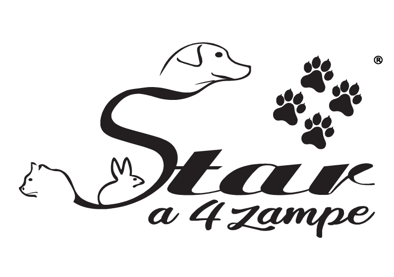

Da Star a 4 zampe®, nella nostra sede situata a Conversano (BA) in via Pietro Nenni, 53/55, offriamo un servizio di Toelettatura professionale ad alta specializzazione, utilizzando esclusivamente cosmetici naturali e tecniche mirate alla salute del manto e della cute.
La nostra filosofia si basa sulla trasparenza: nel nostro Store troverai solo alimenti naturali selezionati direttamente alla fonte. Sosteniamo la filiera corta per garantirti una tracciabilità totale e il massimo valore nutrizionale per la salute del tuo pet.
Affianchiamo alla nutrizione un reparto dedicato alla Parafarmacia veterinaria, dove selezioniamo con cura integratori e soluzioni specialistiche mirate alla prevenzione e alla cura quotidiana dei vostri animali.
Per i vostri giorni più importanti, offriamo l'esclusivo servizio di Wedding Dog Sitter personalizzato: una presenza di fiducia, elegante e professionale, che si prenderà cura del vostro compagno a quattro zampe durante tutta la cerimonia e il ricevimento, permettendogli di condividere la vostra gioia senza alcun elemento di stress.
Per offririrti un'esperienza di comfort assoluto, completiamo la nostra proposta con un exclusivissimo servizio di Asilo diurno, notturno e H24 rigorosamente "No-Cage" (senza gabbie). Inoltre, per agevolare ogni tua esigenza, mettiamo a dispositione il nostro servizio di accompagnamento personalizzato Taxi Dog dedicato a toelettatura e asilo, comode consegne a domicilio per gli acquisti del nostro Store e spedizioni esclusive in tutto il mondo.
Spazi aperti e libertà totale per garantire un soggiorno sereno e senza stress.
Alimenti naturali selezionati all'origine per una tracciabilità e freschezza assolute.
Un servizio di lusso per includere con eleganza il tuo pet nel tuo giorno più bello.
Servizio di ritiro e riconsegna dedicato per asilo e trattamenti spa.
Solo prodotti biologici e tecniche mirate alla salute dermatologica del pet.
Trattamenti dermatologici avanzati, cosmetici bio 100% naturali e asciugatura relax per il benessere assoluto della cute.
Scopri il servizioSoggiorni diurni e H24 in totale libertà con il nostro protocollo rigorosamente No-Cage, in ambienti igienizzati e climatizzati.
Scopri la strutturaL'eccellenza e l'eleganza di un servizio dedicato per rendre il tuo compagno a quattro zampe l'ospite d'onore del tuo matrimonio.
Scopri i dettagliIl servizio di toelettatura di Star a 4 zampe® ridefinisce lo standard dell'estetica e del benessere dermatologico per i vostri compagni più preziosi. La nostra filosofia esclude categoricamente l'utilizzo di sostanze chimiche aggressive: adoperiamo in via esclusiva prodotti dermoprotettivi 100% naturali, totalmente biodegradabili e formulati solo con estratti botanici di derivazione biologica certificata. Questo garantisce la totale assenza di pesticidi, parabeni o agenti tossici nocivi for la cute e per la salute sistemica dei pet.
La sicurezza e la salute sono le nostre priorità assolute: gli ambienti della nostra Spa vengono sanificati, disinfettati e igienizzati costantemente più volte al giorno, nello specifico dopo ogni singolo cliente, utilizzando presidi medico-chirurgici totalmente biologici, antibatterici e rigorosamente innocui per l'olfatto dei pet.
Ogni trattamento è studiato per essere un'esperienza sensoriale rilassante. La fase di asciugatura è rigorosamente antistress e viene eseguita con attrezzature particolari progettate appositamente per svolgere un piacevole massaggio alla cute, favorendo la microcircolazione sottocutanea, l'ossigenazione del bulbo pilifero e la rigenerazione naturale del pelo.
Siamo specializzati nell'esecuzione di protocolli curativi e tecnici complessi, tra cui:
• Bagni dermatologici e medicali: percorsi mirati per pet affetti da dermatiti, arrossamenti o ipersensibilità.
• Bagni antiparassitari di prevenzione e cura: eseguiti in totale sicurezza.
• Tagli a forbice personalizzati ed alta precisione: modellati secondo lo standard di razza o preferenze sartoriali.
• Tosature igieniche e di mantenimento: eseguite nel totale rispetto della tessitura del manto.
• Stripping e Trimming professionali: tecniche manuali indispensabili per i peli ruvidi, volte a preservarne colore e consistenza.
• Cardature stagionali profonde: per la rimozione totale del sottopelo morto e la prevenzione dei nodi.
• Igiene e pulizia dei denti avanzata: trattamenti mirati all'abbattimento del tartaro e alla freschezza del cavo orale senza stress.
Affidare il proprio pet alla nostra Spa significa scegliere un'eccellenza fatta di tecniche d'avanguardia, un'igiene degli ambienti ossessiva e, soprattutto, un amore incondizionato che mette al primo posto la serenità emotiva dell'animale.
L'Asilo diurno e notturno H24 firmato Star a 4 zampe® nasce per sovvertire i vecchi concetti di custodia e pensione, offrendo un vero e proprio soggiorno a cinque stelle. La nostra struttura applica un protocollo rigorosamente No-Cage: nessuna gabbia, nessuna costrizione, ma una totale e vigilata libertà che rispetta l'etologia e la dignità di cani e gatti.
Gli interni sono dotati di un impianto di climatizzazione di ultima generazione controllato elettronicamente, strutturato per mantenere la temperatura perfetta sia in inverno che in estate. Per garantire l'incolumità e la salute dei nostri ospiti, gli ambienti vengono sanificati, disinfettati e igienizzati costantemente più volte al giorno con presidi medico-chirurgici totalmente biologici, antibatterici e innocui per l'olfatto dei pet.
I nostri punti di forza esclusivi includono:
• Spazi esterni pavimentati e immacolati: aree all'aria aperta progettate per il gioco e lo sgambamento, prive di terra per evitare la sporcizia e la proliferazione di parassiti. Durante l'attività all'aperto, i pet non vengono mai lasciati da soli, garantendo una supervisione attiva e costante.
• Videosorveglianza H24 continua: telecamere ad alta definizione monitorano ogni angolo della struttura, assicurando un controllo costante e la massima trasparenza.
• Socializzazione controllata: i gruppi di gioco vengono suddivisi con cura scientifica in base alla taglia, all'età e al temperamento caratteriale.
• Aree relax separate per felini: spazi verticalizzati e silenziosi dedicati interamente alle esigenze e alla riservatezza dei gatti.
Che si tratti di poche ore o di un soggiorno prolungato, i vostri piccoli avranno a disposizione educatori professionisti pronti a colmarli di attenzioni, attività ludiche e riposo regale. Una serenità d'animo per voi, una vacanza indimenticabile per loro.
Il giorno del vostro matrimonio è il coronamento di una storia d'amore, e un membro fondamentale della famiglia non può certamente restare a casa o essere fonte di stress per gli invitati. Il servizio di Wedding Dog Sitter esclusivo di Star a 4 zampe® vi permette di avere il vostro compagno di vita accanto a voi durante la cerimonia e il ricevimento, affidandolo a veri professionisti del settore del lusso pet.
"Il vostro giorno più bello coordinato con eleganza, amore e totale serenità: trasformiamo il vostro fedele compagno nell'ospite d'onore più coccolato e rilassato dell'evento."
Il nostro protocollo include uno studio preventivo del carattere del cane tramite incontri conoscitivi, la gestione attenta dei tempi del banchetto e della cerimonia per evitare picchi di stress da rumore o confusione, e l'affiancamento continuo durante i servizi fotografici. Ci assicureremo che il pet sia sempre idratato, spazzolato, nutrito ad orari precisi e felice di condividere la vostra gioia, garantendovi un matrimonio impeccabile e indimenticabile.
Scegli la professionalità di Star a 4 zampe®. Siamo a tua completa disposizione: contattaci per riservare un servizio o semplicemente per richiedere informazioni dedicate su Toelettatura, disponibilità nell'Asilo No-Cage, qualsiasi tipo di prodotto del nostro Store o per pianificare il servizio Wedding.
Siamo pronti a soddisfare ogni tua richiesta. Scegli la modalità di contatto che preferisci:
Benvenuti nella selezione digitale di Star a 4 zampe®. Qui troverai solo alimenti naturali a filiera corta, integratori fitoterapici avanzati per la parafarmacia e accessori esclusivi di manifattura artigianale.